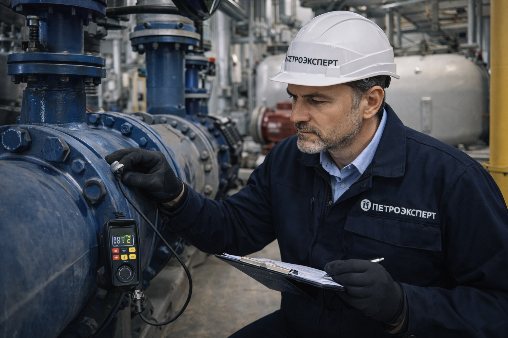

Техническое исследование оборудования проводится с целью проверки его основных эксплуатационных параметров, соответствия фактических параметров нормируемым значениям, а также определения остаточного ресурса, определения причин выхода из строя или порчи. Определяется необходимость проведения ремонта и возможность дальнейшей безопасной эксплуатации.
Независимая экспертиза оборудования любой сложности

Цель экспертизы:
Объекты исследования:
Оборудование/механизм.
Какие документы могут потребоваться для исследования?
- технический паспорт на оборудование;
- описание и инструкция по эксплуатации;
- перечень выявленных дефектов;
- протоколы о проводимых профилактиках, ТО и ремонтах;
- другая полезная информация о состоянии оборудования;
Компания «ПетроЭксперт» проводит техническую экспертизу оборудования в досудебном порядке и по направлению судов – мы работаем с судами в Северо-Западном и Центральном регионах.
Вы можете заказать исследование по договору, в том числе рамочному, дающему дополнительную скидку на проведение технической оценки оборудования. Мы работаем с частными компаниями и государственными организациями. Опыт проведения экспертизы оборудования – более 18 лет.
Независимая экспертиза оборудования:
Проводим независимую экспертизу оборудования в Москве и Санкт-Петербурге, Великом Новгороде, Петрозаводске и других городах России.
Цена и срок проведения экспертизы механизмов, агрегатов, деталей зависят от поставленных вопросов и сложности исследования. Запросить точный расчет времени и стоимости вы можете через форму на сайте, по почте или телефону «ПетроЭксперт» в нужном вам регионе.
С нами вы будете уверены:
- в точности проводимых исследований: мы имеем собственные аккредитованные лаборатории и сотрудничаем с ведущими исследовательскими институтами РФ.
- в объективности заключения эксперта: над вашей задачей работают специалисты, получившие сертификацию в судебной экспертизе и ежегодно повышающие уровень квалификации.
Проведение экспертизы оборудования
Исследование проводится в соответствии с ФЗ «О государственной судебно-экспертной деятельности». Эксперт обязательно учитывает всю сопроводительную техническую документацию, в том числе документы, подтверждающие прохождение технического обслуживания и ремонт, а также ГОСТы и технические требования для исследуемого изделия.
Стоимость
| Услуга | Стоимость (от, руб.) |
|---|---|
| Проведение экспертизы несложного серийного оборудования | от 35 000 ₽ |
| Проведение экспертизы/исследования сложного серийного или нестандартного оборудования | от 70 000 ₽ |
Возможные вопросы к эксперту:
- Соответствует ли оборудование сопроводительным документам, ГОСТу или другим техническим нормам?
- В каком техническом состоянии оборудование сейчас или на момент аварии, поломки, выхода из строя?
- Какова степень износа оборудования?
- Исправно оборудование или нет? Подходит ли оно для эксплуатации?
- Какие дефекты обнаружены при эксплуатации оборудования? Как они влияют на производительность оборудования?
- Что явилось причиной поломки механизма или сбоя в работе оборудования?
- Соответствует ли квалификация сотрудников для работы на оборудовании или с его помощью?
- Могло ли несоблюдение правил техники безопасности стать причиной поломки механизма или аварии?
- Нарушались ли правила хранения или эксплуатации оборудования? Какие неисправности из-за этого возникли?
Вы можете ходатайствовать о проведении экспертизы через суд, а также в частном порядке. Когда вы обращаетесь к нам напрямую, а не в рамках судебного процесса, то наш специалист помогает вам верно сформулировать вопрос для исследования, исходя из обозначенной проблемы. При этом цена договорного исследования ниже, чем стоимость проведения судебной экспертизы. Подробнее вы можете проконсультироваться по телефону 8 (812) 439-19-57 (бесплатно по всей России) или по почте info1@petroexpert.ru. Обращайтесь прямо сейчас!